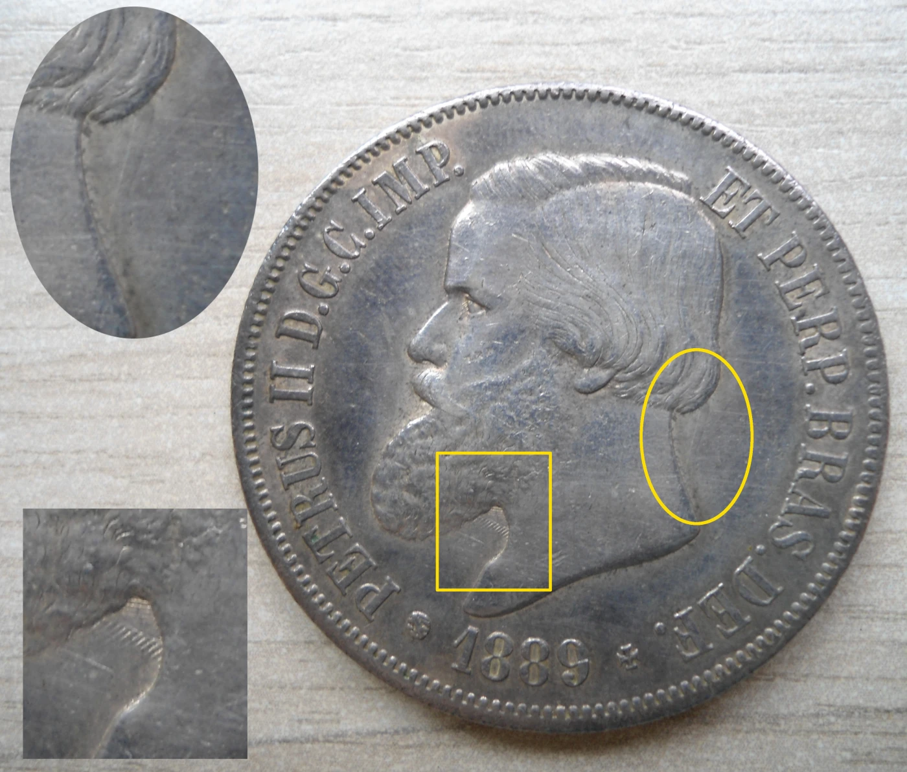
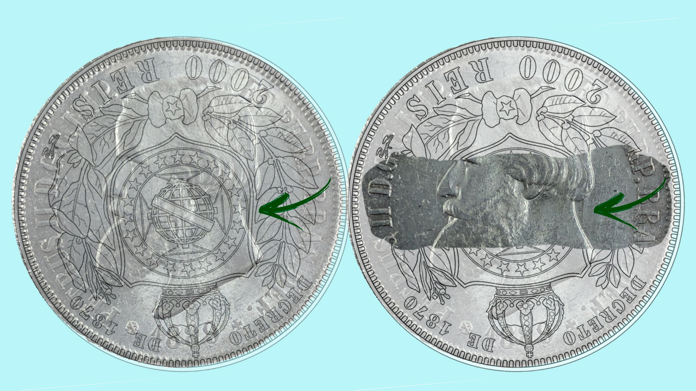
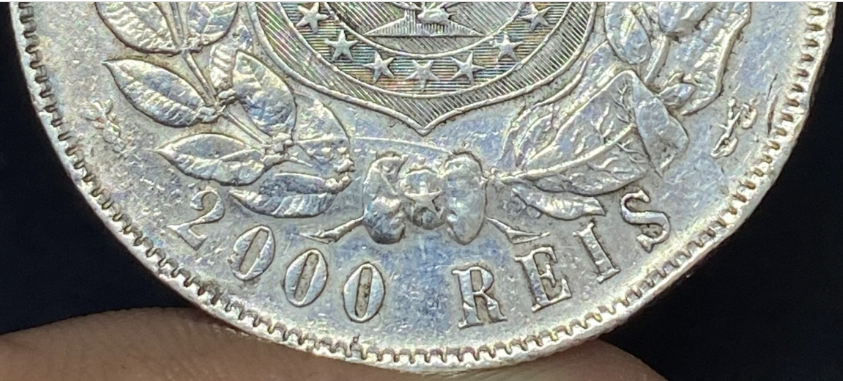
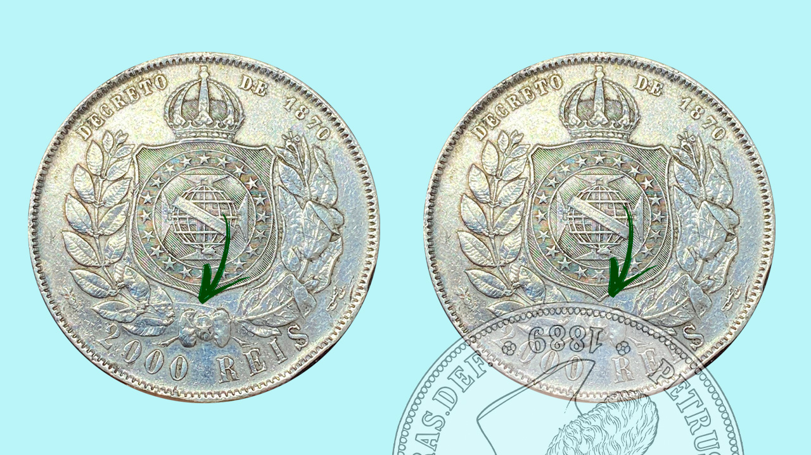

Moeda Rabicho no cabelo, é variante ou erro de cunhagem?
A moeda com "rabicho" já bem conhecida por colecionadores e alguns entusiastas do colecionismo, da numismática, para quem não sabe é uma moeda de 500 ou 2000 réis do terceiro sistema monetário quarto tipo, com uma suposta variação ou erro, há um questionamento sobre essas moedas, eu digo essas por que existem algumas variações de data e valor facial, eu mesmo tenho uma de 500 reis de 1888, mas em um artigo "Seria o famoso “rabicho no cabelo” de fato uma variante?" no Ilha Coleções mostra a moeda de 2000 réis de 1889, no catálogo da Bentes "Livro Bentes das Moedas Brasileiras" 8ª edição mostra a 500 e a 2000 réis 1889, nenhuma na data 1888, no catálogo do Irlei/Amato "Livro das Moedas do Brasil" mostra a de 500 réis de 1888, 1889 e a de 2000 réis de 1889, a dúvida é o sobre o que de fato é esse rabicho? uma variante mesmo ou uma anomalia?

No artigo citado a cima mostra que essas moedas não seria variantes, mas uma falha na produção onde a matriz do cunho do anverso se chocou com a matriz do cunho do reverso, isso ocorreu por algum erro em que o disco (moeda sem marca ou lisa)não entrou na virola causando esse impacto nos devidos cunhos gerando tal fenda que quando aplicada num disco obteve esse relevo dando a entender que se tratava de um rabicho no cabelo de Pedro II. Veja a imagem abaixo:

Compreende-se que o desenho não se satisfaz para um rabicho de fato e não seria erro de desenho de Cristian Luster, deixando claro que se trata de uma anomalia, com a imagem acima fica mais claro determinar esse fato, isso não desvaloriza essas peças pelo contrario, torna mais relevante ter uma dessas peças, é um toque a mais que mexe com a curiosidades, entendimentos, questionamentos que tem na numária brasileira que é rica em história.
Esses erros criou também a anomalia do ramo de café solto, se analisar bem a maioria das moedas de 2000 réis de 1889 que tem o rabicho também tem o ramo de café solto, mas no caso desse ultimo o cunho foi muito forte numa peça já batida e que não saiu por completo da virola, isso causou umas pequenas fendas na matriz e apagou o galho que liga os ramos de café, que quando foi aplicado nos discos remanescente deixou esse desenho diferente dando a ideia de que o ramos realmente estava solto. A imagem abaixo mostra o que levou a esse erro, observa-se que pontos marcados indica que sejam a orla perolada do desenho na moeda.

É importante desvendar o que realmente houve e definir de fato do que se trata as diferenças em algumas características e desenhos nas moedas para sabermos se são variantes ou erros de cunhagem, a importancia da numismática para esclarecer alguns mistérios da numária brasileira, a exemplo dessas moedas citadas, que confirma que são anomalias provocadas por acidentes na cunhagem (produção) devemos sempre estudar toda história por trás de peças icônicas.

A imagem acima mostra como deve ter acontecido a marcação das fendas e possivel desligamento do ramo de café deixando essa característica, não posso precisar profundamente a posição da matriz do cunho bateu no outro, mas seria o mais provável e é o que eu acredito. Lembrando que as maquinas da época eram 100% mecânicas, não existia as tecnologias que temos hoje, então incidentes eram mais frequentes devido as limitações da época.